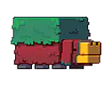
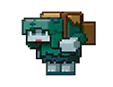
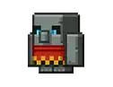

Foi revelado os novos mobs da votação do Minecraft!
Os novos mobs
Os novos mobs
A atualização dos novos mobs este ano ocorrerá de outra forma, diferente de todos os anos, onde a votação ocorria dia 15 de Outubro no Minecraft Live, este ano a votação ocorrerá no dia 14 de Outubro um dia antes do evento principal, e para a nova atualização 1.20, teremos como votar entre os três novos mobs, o Sniffer, Rascal e o Tuff Golem.
Sniffer
Os Sniffer são criaturas ancestrais, que viveram a milhares de anos, mas que agora podem ser encontrado seus ovos em baús das ruínas submarinas e navios naufragados. São criaturas totalmente pasivas, e que podem se multiplicar, além disso há por aí sementes que só o sniffer pode encontrar!
Rascal
Esta criatura não passa de um mob brincalhão, onde seu objetivo é brincar de esconde-esconde, se o jogador ver ele três vezes, o Rascal lhe presenteará com um item especial, para ajudar em sua mineração. Visto que este mob se esconde nas minas subterrâneas, por isso, fique atento!
Tuff Golem
Este baixinho de pedra pode ser mais vivo do que parece! O Tuff Golem é capaz de caminhar e apanhar todos os itens que encontrar ou que você dar à ele. Porém após um tempo ele volta ao lugar onde o tinha colocado e volta a ser uma estátua, ou uma obra prima!
Principais Dúvidas
O que é o Minecraft Live?
O Minecraft Live, é um evento online que ocorre todo dia 15/10, através de uma transmissão ao vivo onde é abordada todas as novidades do game, para nova atualização.
Onde assistir ao Minecraft Live?
Você poderá assistir ao Minecraft Live em seu site oficial ou na conta do Facebook, YouTube, ou Twitch.
Como participar da votação?
A votação ocorrerá no site oficial do Minecaft.No dia 14 de Outubro apartir das 12:00 a.m, com o término no dia 15 de Outubro às 12:00 a.m, lembrando que voçê terá direito a um voto, mas podendo mudalo, se assim desejar, durante essas 24 horas.